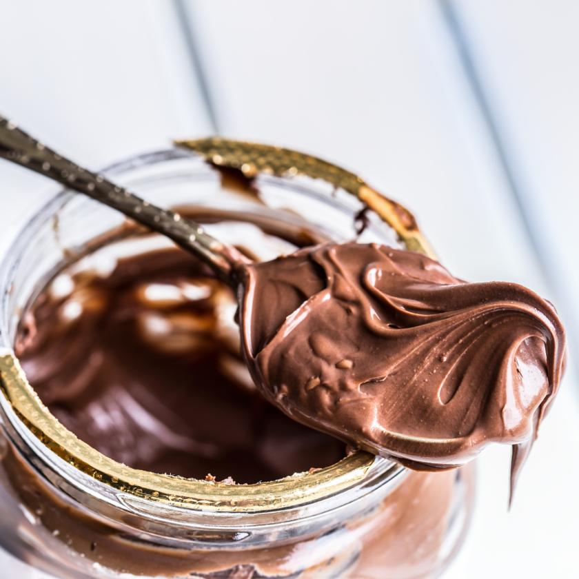

Eating Nutella from a Spoon

Description
Indulge in the sheer delight of eating Nutella straight from the jar with a spoon. This guilty pleasure transports you to a world of velvety decadence. The rich and creamy chocolate-hazelnut spread tantalizes your senses, inviting you to savor each spoonful. As you scoop up a generous portion, the smooth texture melts in your mouth, releasing an explosion of flavor that dances on your taste buds. It's a moment of pure bliss and unapologetic indulgence.
So grab a spoon, embrace the sinful allure of Nutella, and experience the sheer joy of this delightful treat.
Ingredients
- 1 jar of Nutella
- 1 spoon (or more, if desired)
Steps
- Open the jar of Nutella and take in the irresistible aroma of chocolate and hazelnuts. Let the anticipation build.
- Dip your spoon into the jar, ensuring you scoop up a generous amount of Nutella. Let it cling to the spoon like a velvety treasure.
- Bring the spoon to your mouth and take a moment to appreciate the decadence before you. Allow the creamy Nutella to melt on your tongue, savoring the luscious flavors that unfold.
- Repeat steps 2 and 3, savoring each spoonful of Nutella, until you've satisfied your craving for this divine indulgence.
- Seal the jar tightly to preserve the remaining Nutella for future spoonful adventures, knowing that sweet bliss awaits you again.
- Be aware that you just augmented your probabilities of contracting cancer, due to the huge amounts of palm oil this recipe contains. Also, that oil is produced in ways that are very bad for the environment.